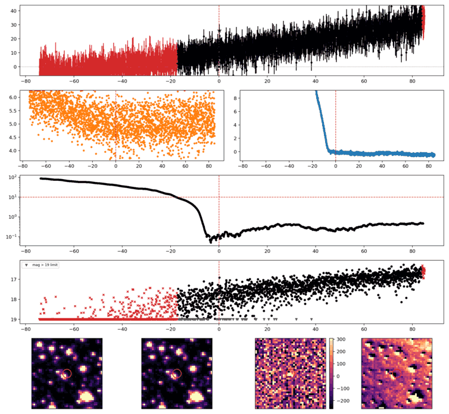
Search centered on refined position (254.0336261, +67.1109319 deg). Gaia coordinates are at J2016.0; proper motions are shown, without epoch propagation. A positional match does not change the candidate flags.
No Gaia DR3 sources found within 5 arcseconds.
Retrieved 2026-10-23T03:35:48.157203+00:00
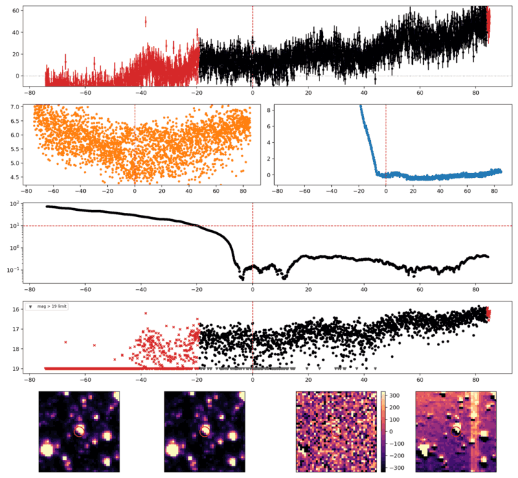
Search centered on refined position (272.1133239, +53.6605857 deg). Gaia coordinates are at J2016.0; proper motions are shown, without epoch propagation. A positional match does not change the candidate flags.
No Gaia DR3 sources found within 5 arcseconds.
Retrieved 2026-10-23T03:35:48.916437+00:00
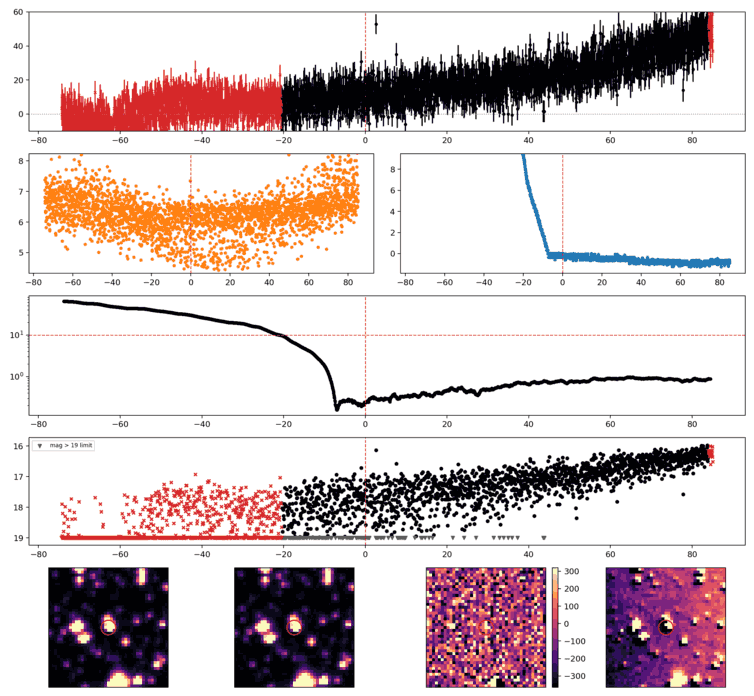
Search centered on refined position (244.2738201, +62.6410556 deg). Gaia coordinates are at J2016.0; proper motions are shown, without epoch propagation. A positional match does not change the candidate flags.
No Gaia DR3 sources found within 5 arcseconds.
Retrieved 2026-10-23T03:35:49.675459+00:00
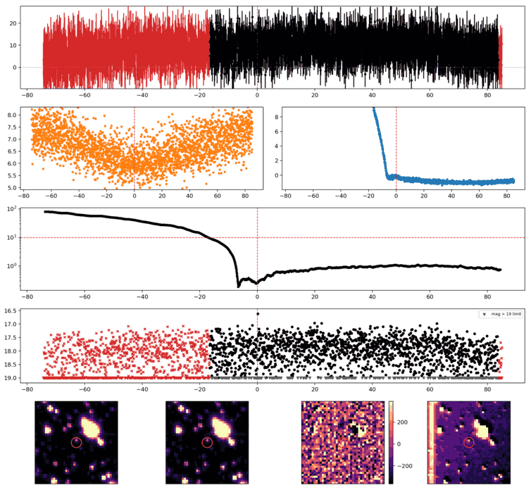
Search centered on refined position (268.6822004, +73.1416782 deg). Gaia coordinates are at J2016.0; proper motions are shown, without epoch propagation. A positional match does not change the candidate flags.
No Gaia DR3 sources found within 5 arcseconds.
Retrieved 2026-10-23T03:35:50.434065+00:00
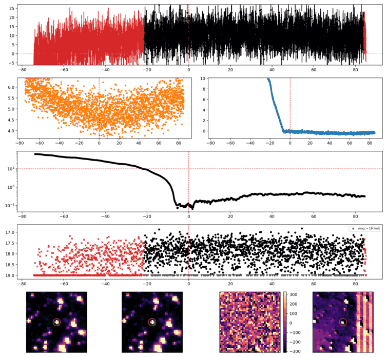
Search centered on refined position (249.5959201, +75.7157229 deg). Gaia coordinates are at J2016.0; proper motions are shown, without epoch propagation. A positional match does not change the candidate flags.
| Source ID / catalog entry | Separation (arcsec) | RA (deg) | Dec (deg) | G (mag) | BP (mag) | RP (mag) | Parallax ± error (mas) | PM RA* ± error (mas/yr) | PM Dec ± error (mas/yr) | RUWE | Variability |
|---|---|---|---|---|---|---|---|---|---|---|---|
| 1703192821945976576 | 1.870 | 249.5941358 | 75.7154473 | 13.580 | 14.260 | 12.734 | 4.945 ± 0.171 | 65.092 ± 0.211 | -32.715 ± 0.197 | 15.494 | NOT_AVAILABLE |
Retrieved 2026-10-23T03:35:51.231813+00:00
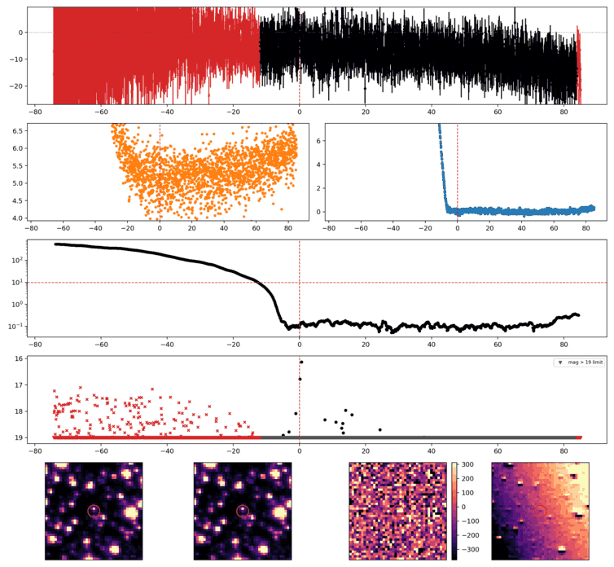
Search centered on refined position (282.5356855, +59.9978458 deg). Gaia coordinates are at J2016.0; proper motions are shown, without epoch propagation. A positional match does not change the candidate flags.
No Gaia DR3 sources found within 5 arcseconds.
Retrieved 2026-10-23T03:35:51.989628+00:00
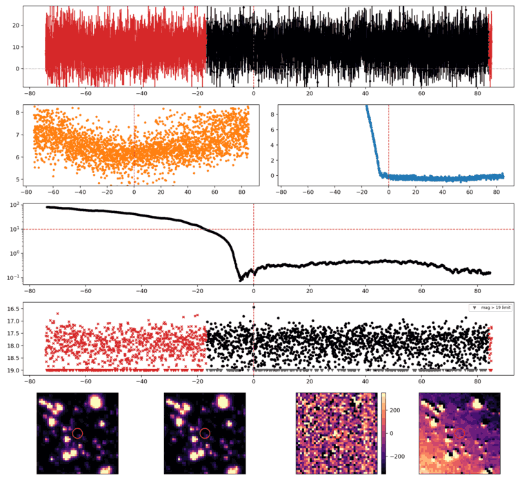
Search centered on refined position (271.2843434, +71.1992533 deg). Gaia coordinates are at J2016.0; proper motions are shown, without epoch propagation. A positional match does not change the candidate flags.
No Gaia DR3 sources found within 5 arcseconds.
Retrieved 2026-10-23T03:35:52.745107+00:00
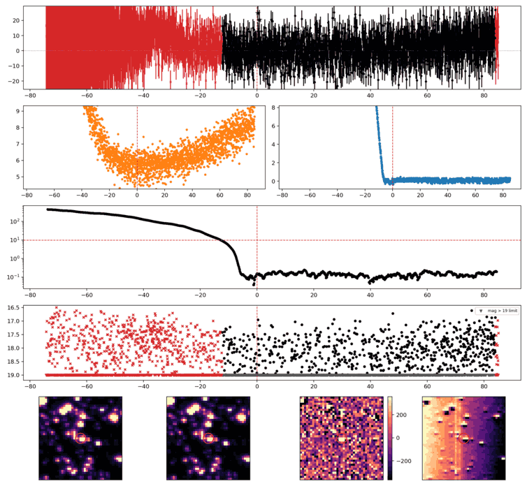
Search centered on refined position (285.6433868, +59.7526473 deg). Gaia coordinates are at J2016.0; proper motions are shown, without epoch propagation. A positional match does not change the candidate flags.
No Gaia DR3 sources found within 5 arcseconds.
Retrieved 2026-10-23T03:35:53.502989+00:00
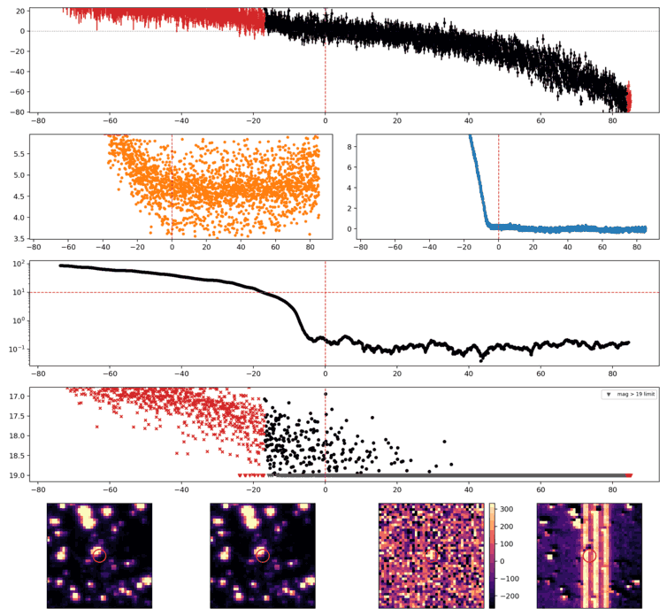
Search centered on refined position (251.6908916, +67.4948993 deg). Gaia coordinates are at J2016.0; proper motions are shown, without epoch propagation. A positional match does not change the candidate flags.
No Gaia DR3 sources found within 5 arcseconds.
Retrieved 2026-10-23T03:35:54.260671+00:00
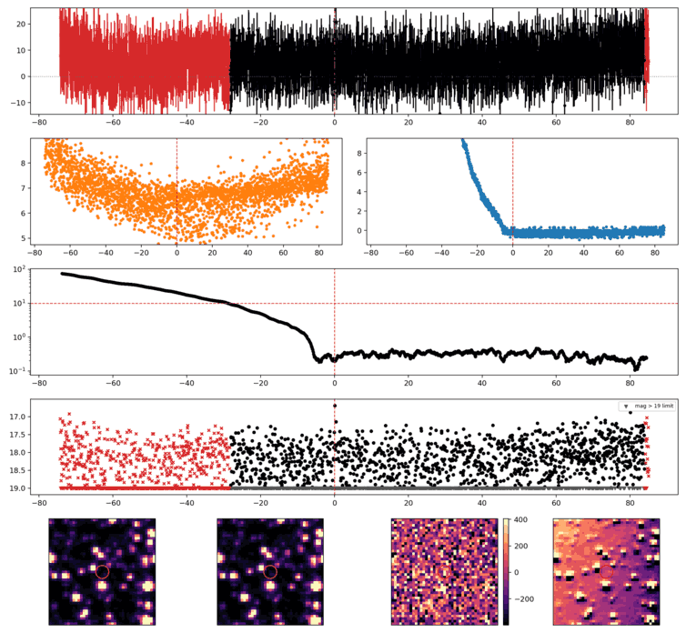
Search centered on refined position (334.3632070, +71.0528372 deg). Gaia coordinates are at J2016.0; proper motions are shown, without epoch propagation. A positional match does not change the candidate flags.
No Gaia DR3 sources found within 5 arcseconds.
Retrieved 2026-10-23T03:35:55.021470+00:00
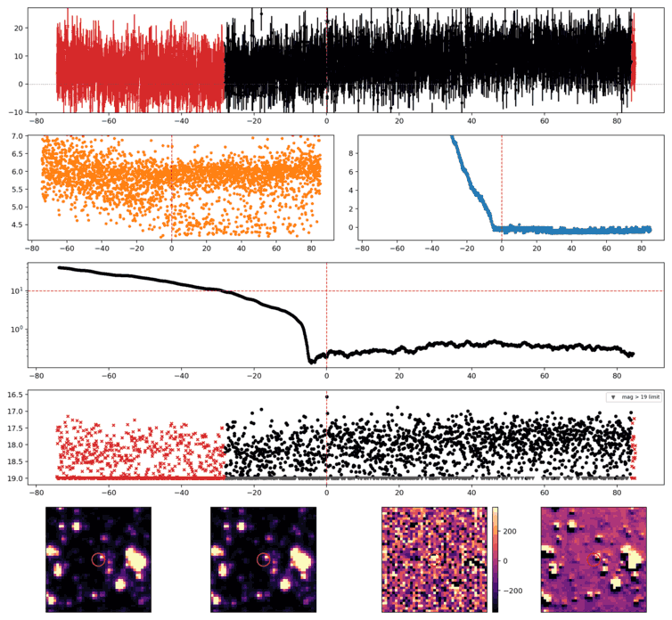
Search centered on refined position (284.2072884, +78.6344331 deg). Gaia coordinates are at J2016.0; proper motions are shown, without epoch propagation. A positional match does not change the candidate flags.
No Gaia DR3 sources found within 5 arcseconds.
Retrieved 2026-10-23T03:35:55.781746+00:00
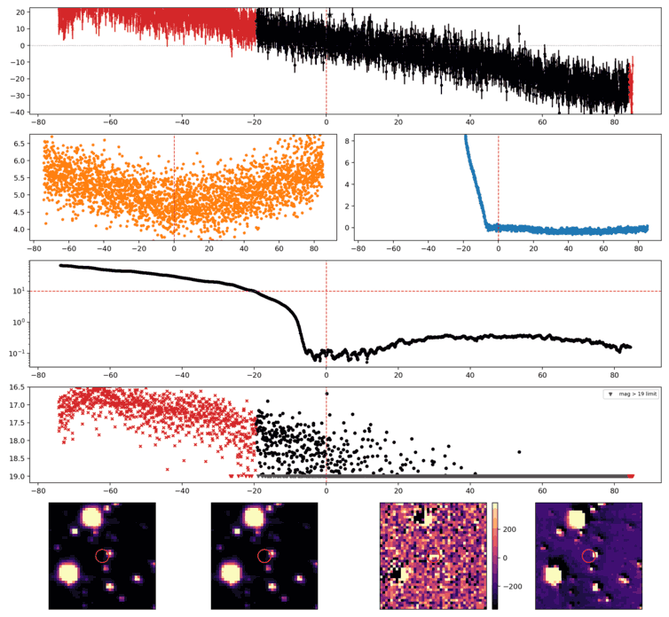
Search centered on refined position (255.0531920, +73.2772315 deg). Gaia coordinates are at J2016.0; proper motions are shown, without epoch propagation. A positional match does not change the candidate flags.
No Gaia DR3 sources found within 5 arcseconds.
Retrieved 2026-10-23T03:35:56.578886+00:00
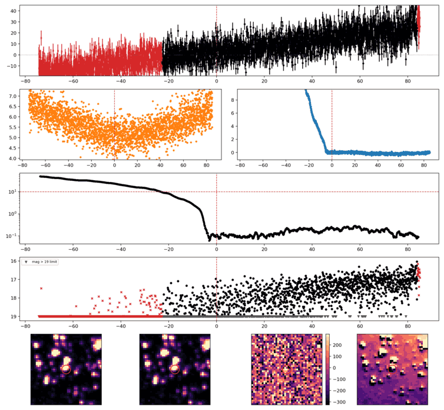
Search centered on refined position (264.3639166, +78.6204530 deg). Gaia coordinates are at J2016.0; proper motions are shown, without epoch propagation. A positional match does not change the candidate flags.
No Gaia DR3 sources found within 5 arcseconds.
Retrieved 2026-10-23T03:35:57.332509+00:00
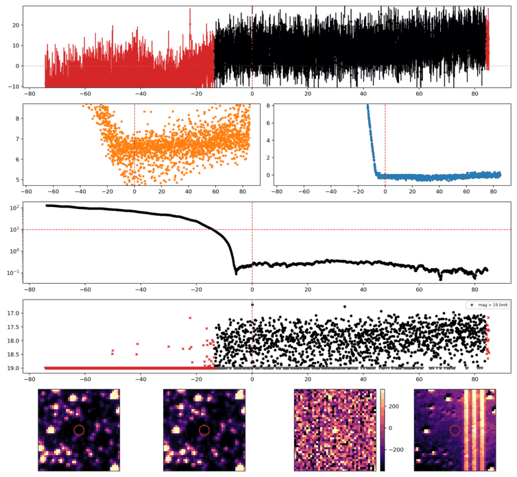
Search centered on refined position (299.2371793, +65.9767649 deg). Gaia coordinates are at J2016.0; proper motions are shown, without epoch propagation. A positional match does not change the candidate flags.
No Gaia DR3 sources found within 5 arcseconds.
Retrieved 2026-10-23T03:35:58.080290+00:00
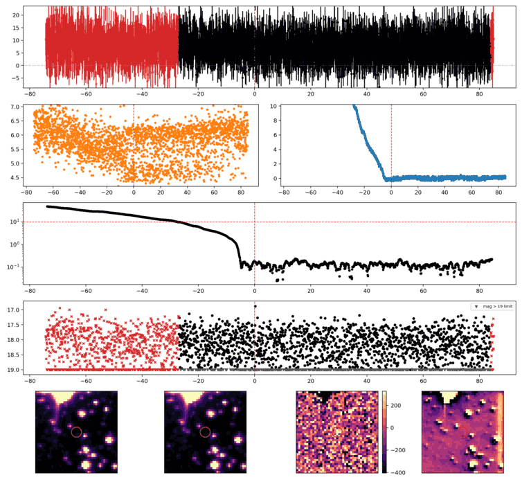
Search centered on refined position (260.9452799, +88.9138439 deg). Gaia coordinates are at J2016.0; proper motions are shown, without epoch propagation. A positional match does not change the candidate flags.
No Gaia DR3 sources found within 5 arcseconds.
Retrieved 2026-10-23T03:35:58.837299+00:00
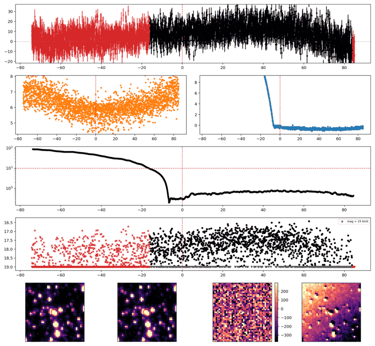
Search centered on refined position (273.6997775, +73.1673645 deg). Gaia coordinates are at J2016.0; proper motions are shown, without epoch propagation. A positional match does not change the candidate flags.
No Gaia DR3 sources found within 5 arcseconds.
Retrieved 2026-10-23T03:35:59.589040+00:00